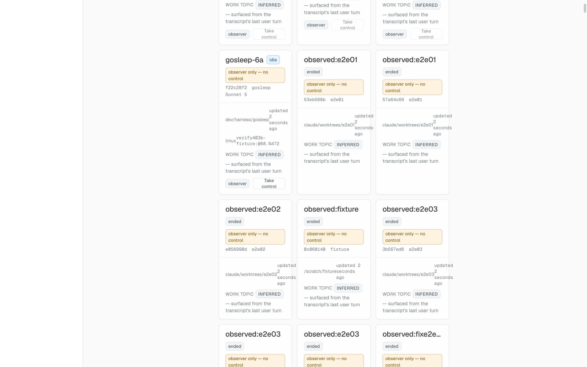

1
GSL-403
MINOR
Observed panel + Take
functionality
(a) Fixture appears on /observed as observer with Take control enabled — PASS
A fresh Claude Code fixture (Claude Code v2.1.233 Sonnet 5, tmux verify403b-fixture, session id f22c28f2-b9f3-45c0-9153-ef6d12d7c878) was launched WITHOUT the pilot opt-in (GOSLEEP_WEB_QUESTIONS unset). It targeted the scratch core on 127.0.0.1:7371 via GOSLEEP_CORE_URL + GOSLEEP_INTERNAL_SECRET. The first AskUserQuestion invocation fired the shim heartbeat — session_control.shim_registered=true — and /observed/sessions reported control_state=observer, control_source=runtime, env_locked=false, i.e. exactly the pre-condition the panel needs to enable the Take-control button.
Shippedapps/core/src/routes/observed.ts + apps/core/src/routes/internal.ts (/internal/sessions/:sid/shim-heartbeat)

